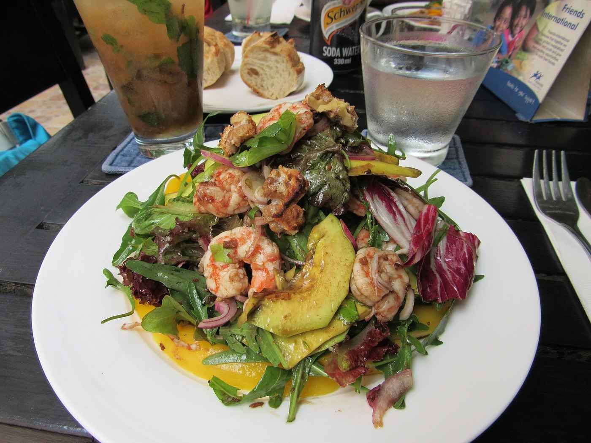

FREQUENTLY ASKED PITAYA QUESTIONS.
Expert botanical answers regarding the difference between red, white, and yellow pitaya cultivars, nutritional betacyanin benefits, and storage guidelines.

1. What is the difference between red-fleshed and white-fleshed dragon fruit?
Red-fleshed dragon fruit (primarily Hylocereus polyrhizus and costaricensis) contains concentrated betacyanin pigments throughout its pulp, giving it a vibrant magenta color, higher antioxidant density, and a richer berry-like flavor profile. White-fleshed dragon fruit (Hylocereus undatus) has pink skin with green scales but crisp white translucent flesh, offering a milder, refreshing taste reminiscent of melon or kiwi with subtle floral undertones.
2. Why is yellow dragon fruit often considered the sweetest variety?
Yellow dragon fruit (Selenicereus megalanthus) is a distinct botanical species native to the Andean valleys of South America. It naturally achieves a significantly higher sugar concentration, routinely testing between 18° and 21° Brix on optical refractometers, compared to 12° to 14° Brix for commercial supermarket white varieties. Its flavor is remarkably sweet, aromatic, and complex, with hints of lychee, pear, and tropical honey.
3. How should fresh dragon fruit and cold-pressed nectar be stored?
Whole unpeeled dragon fruits should be stored in the crisper drawer of your refrigerator at 7°C to 10°C, where they remain fresh for up to two weeks. Once sliced, seal the fruit in an airtight container and consume within 48 hours. Our raw unpasteurized cold-pressed nectar must be kept refrigerated at all times and consumed within 5 to 7 days, or kept frozen at -18°C for up to six months to preserve live enzymes.
4. Are dragon fruit seeds edible and do they provide nutritional benefits?
Yes, the tiny black seeds suspended throughout the pitaya pulp are completely edible and should be chewed rather than swallowed whole. They are exceptionally rich in polyunsaturated essential fatty acids—specifically linoleic acid (Omega-6) and oleic acid (Omega-9)—as well as plant sterols that support cardiovascular wellness and lipid balance.
5. What are betacyanins and why are they important?
Betacyanins are water-soluble nitrogenous pigments found in a select few plant families, most notably Caryophyllales (which includes cacti and beets). Unlike common anthocyanins, betacyanins remain stable across a broad pH range and display superior thermal and oxidative resilience. In clinical studies, they have demonstrated potent free-radical scavenging, anti-inflammatory, and lipid peroxidation inhibition properties.
6. Can dragon fruit be incorporated into savory culinary dishes?
Yes, absolutely. Because white and red pitayas possess a gentle balance of sweetness and subtle acidity, they pair beautifully with savory ingredients. Acclaimed chefs utilize diced chilled dragon fruit in ceviches, avocado salads, grilled seafood salsas, and reductions paired with rich meats, adding crunch, vibrant color, and refreshing contrast.
7. How do I reserve a private tasting salon appointment in New York?
Private tasting sessions are hosted at our boutique salon located at 181 Mercer Street, New York, NY 10012. You may book your appointment by calling +1-888-777-5845 or submitting our digital reservation form on the contact page. Our horticultural team will guide you through a flight of heirloom cultivars and raw nectar pairings.